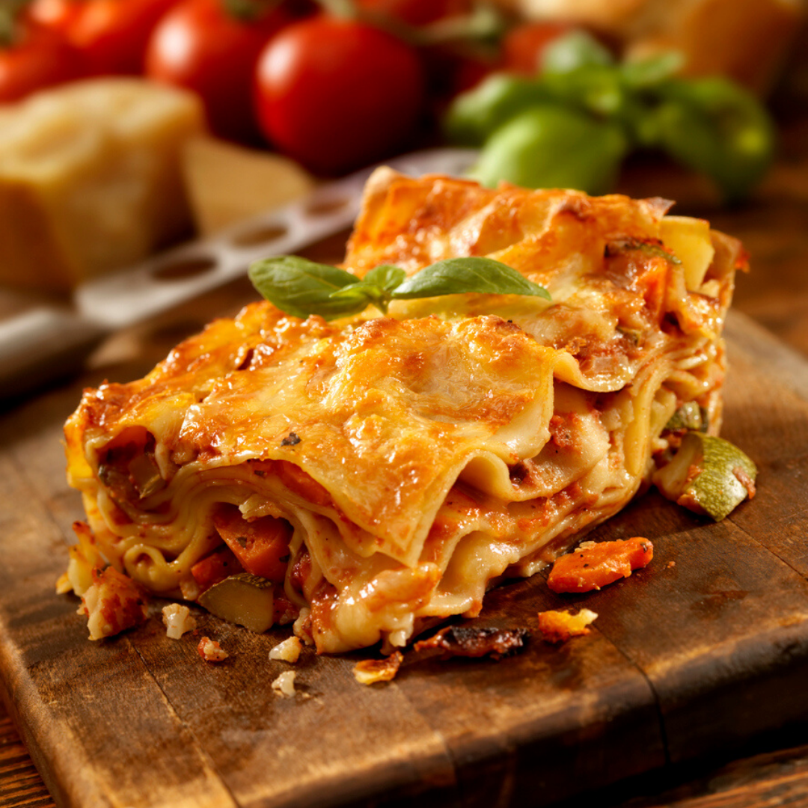

Lasagne
 alt="Lasagne"
Description
A colorful, tasty dish. Served with garlic bread, this vegetarian lasagne makes an excellent meal for guests.
Pasta
- 5 ounces spinach -rinsed, stemmed and dried
- 2 eggs
- ⅝ cup semolina flour
- 1 teaspoon salt
- 1 ½ cups all-purpose flour
Ragu
- 2 tablespoons butter
- 2 slices bacon, diced
- 1 carrot, diced
- 1 stalk celery, diced
- 1 onion, diced
- 3 ½ ounces lean ground pork
- 3 ½ ounces lean ground beef
- 3 ½ ounces minced ham
- 2 tablespoons tomato paste
- 1 teaspoon dried oregano
- 1 cup beef stock
- salt and pepper to taste
- 3 ½ ounces chicken livers, trimmed and chopped
Bechamel
- 2 tablespoons butter
- 2 tablespoons all-purpose flour
- 2 cups warm milk
- 1 pinch salt
- 1 pinch ground nutmeg
Cheese
- 1 ⅔ cups grated Parmesan cheese
- 1 pint ricotta cheese
- 3 tablespoons butter
Directions
- For the pasta dough: Steam the spinach in a steamer or over boiling water until bright green, 2 minutes. Squeeze to remove excess moisture and process in a food processor to make a paste. Combine spinach with eggs, semolina, and salt and process until smooth. Stir in enough of the flour to make a smooth dough. Knead briefly, cover and set aside.
- For the ragu: In a large skillet, melt butter over medium-high heat. Saute bacon, carrot, celery and onion until onion is translucent. Stir in ground pork, ground beef and minced ham, and cook until browned. Stir in tomato paste, oregano and beef stock. (Reserve the chicken livers for later.) Season with salt and pepper, reduce heat to low, cover and simmer 20 minutes.
- For the bechamel: While the ragu is simmering, combine 2 tablespoons butter and 2 tablespoons flour in a medium saucepan over medium-low heat. Whisk to make a roux. Remove from heat, let rest one minute, then whisk in warm milk. Return to heat, simmer 10 minutes, stirring constantly, until thickened. Season with salt and nutmeg. Remove from heat.
- To cook pasta: Bring a large pot of lightly salted water to a boil. On a floured surface, divide pasta dough into three portions. Roll each portion out to a thin sheet. Have ready an ice water bath. Cook each sheet 3 minutes in the boiling water; remove from the boiling water and dip in the ice water; drain and dry on a clean, dry cloth.
- To finish the ragu: Stir the chicken livers into the simmering sauce. Cook 1 minute, remove from heat and set aside.
- Preheat oven to 400 degrees F (200 degrees C). Grease a 9x13 baking dish.
- To assemble lasagna: Place one pasta sheet in bottom of prepared baking dish. Spread one-third of the ragu, one-quarter of the bechamel, one-third of the ricotta, and one-quarter of the parmesan over the pasta. Repeat layers twice. Top with remaining bechamel and parmesan and dot with butter.
- Bake in preheated oven 30 minutes, until top is golden brown.